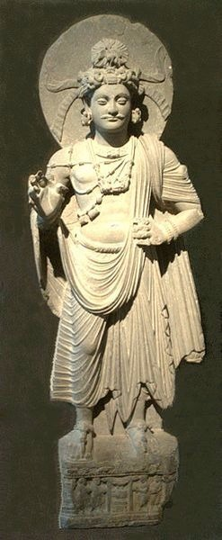
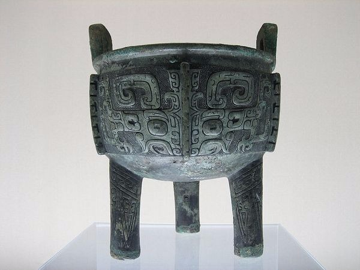
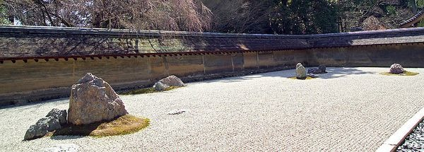

1
How were Chola bronzes made?
Choose one answer.
| a. Piece-mold method of casting | ||
| b. Sand casting | ||
| c. Lost wax casting | ||
| d. Centrifugal casting | ||
| e. None of the above |
Question 2
The architecture of Fatehpur Sikri
was a synthesis of the _________
tradition(s).
Choose one answer.
| a. Hindu Indian | ||
| b. Muslim Indian | ||
| c. Timurid Iranian and Central Asian | ||
| d. All of the above | ||
| e. None of the above |
Question 3
The buildings of Fatehpur Sikri are
made from what kind of stone?
Choose one answer.
| a. Granite | ||
| b. Red sandstone | ||
| c. Marble | ||
| d. All of the above | ||
| e. None of the above |
Question 4
The Hindu temples at Mahabalipuram
were constructed during the reign
of the ____________.
Choose one answer.
| a. Guptas | ||
| b. Pallavas | ||
| c. Mughals | ||
| d. Cholas | ||
| e. None of the above |
Question 5
The Taj Mahal is made from what
type of stone?
Choose one answer.
| a. Sandstone | ||
| b. Granite | ||
| c. Marble | ||
| d. Limestone | ||
| e. None of the above |
Question 6
This image depicts which Hindu
temple?
Choose one answer.
| a. Kailasanatha | ||
| b. Khajuraho | ||
| c. Brihadisvara | ||
| d. Ajanta | ||
| e. Mahabalipuram |
Question 7
This image is from which Indian
site?

Choose one answer.
| a. Fatehpur Sikri | ||
| b. Khajuraho | ||
| c. Sarnath | ||
| d. Gandhara | ||
| e. Sanchi |
Question 8
This image is of which Hindu
site?

Choose one answer.
| a. Ellora | ||
| b. Mahabalipuram | ||
| c. Tamil Nadu | ||
| d. Ajanta | ||
| e. None of the above |
Question 9
This image presents an example of a
Buddhist sculpture made in what
region during the Kushan
dynasty?

Choose one answer.
| a. Mathura | ||
| b. Gandhara | ||
| c. Sarnath | ||
| d. Kondavane | ||
| e. None of the Above |
Question 10
Under what empire did the "ideal
form" of the Buddha, which would be
the model for future generations,
appear throughout Southeast and
East Asia?
Choose one answer.
| a. Pala Empire | ||
| b. Mauryan Empire | ||
| c. Kushan Empire | ||
| d. Gupta Empire | ||
| e. Chalukya Empire |
Question 11
Under which empire did the first
iconic depictions of the Buddha
appear?
Choose one answer.
| a. Gupta | ||
| b. Mauryan | ||
| c. Pallava | ||
| d. Kushan | ||
| e. Harsha |
Question 12
What are Buddhist worship halls,
made of brick or excavated from
stone, called?
Choose one answer.
| a. Stupas | ||
| b. Chaitya grihas | ||
| c. Viharas | ||
| d. Gorupas | ||
| e. None of the above |
Question 13
What are jataka tales?
Choose one answer.
| a. Stories about the lives of the Buddha's disciples | ||
| b. Stories about the lives of bodhisattvas | ||
| c. Stories about the life of and previous lives of the Buddha | ||
| d. All of the above | ||
| e. None of the above |
Question 14
What are the Khajuraho temples most
well-known for?
Choose one answer.
| a. They are most well-known as examples of Dravidian temple architecture. | ||
| b. They are most well-known for their erotic carvings on the temple's exterior. | ||
| c. They are most well-known for their tall pyramidal towers. | ||
| d. All of the above | ||
| e. None of the above |
Question 15
What is a gopura?
Choose one answer.
| a. A monumental tower at the entrance to a Hindu temple | ||
| b. The most sacred area of a Hindu temple | ||
| c. The name of a pool in a Hindu temple used for ritual washing | ||
| d. The area surrounding a Hindu temple | ||
| e. The inner courtyard of a Hindu temple |
Question 16
What is the name of the largest
mosque in India?
Choose one answer.
| a. Jama Masjid | ||
| b. Badshahi Mosque | ||
| c. Quwwat-ul-Islam Masjid | ||
| d. Moti Masjid | ||
| e. None of the above |
Question 17
What kind of Buddhist figure does
this image depict?
Choose one answer.
| a. Bodhisattva | ||
| b. Aspara | ||
| c. Buddha | ||
| d. Demon king | ||
| e. Arhat |
Question 18
Which Hindu god is often depicted
dancing on a dwarf in Chola bronze
statues?
Choose one answer.
| a. Ganesha | ||
| b. Vishnu | ||
| c. Hanuman | ||
| d. Krishna | ||
| e. Shiva |
Question 19
Which of the following descriptions
characterize(s) miniatures created
at the atelier of Jahangir?
Choose one answer.
| a. They were usually created by a single painter. | ||
| b. Many were plant and animal studies. | ||
| c. Most were part of lavishly finished albums. | ||
| d. Many contained realistic portraiture and Europeanized subjects. | ||
| e. All of the above |
Question 20
Which of the following is/are (a)
basic component(s) of a Hindu
temple?
Choose one answer.
| a. A garbha gihra or womb chamber | ||
| b. Four gateways | ||
| c. A prayer hall | ||
| d. A north-south axis | ||
| e. All of the above |
Question 21
Which of the following descriptions
characterize(s) Dravidian Hindu
temples?
Choose one answer.
| a. They are pyramidal in shape. | ||
| b. They are square in plan. | ||
| c. They contain tanks or wells of water. | ||
| d. All of the above | ||
| e. None of the above |
Question 22
Which of the following is a way in
which the Buddha was depicted in
early Buddhist art?
Choose one answer.
| a. As a prayer wheel | ||
| b. As a pair of foot prints | ||
| c. As an empty seat | ||
| d. As a character in a jataka tale | ||
| e. All of the above |
Question 23
Which of the following statements
about the Taj Mahal is NOT
true?
Choose one answer.
| a. It represents the Islamic garden of paradise. | ||
| b. It is decorated throughout with verses from the Koran. | ||
| c. It is decorated with murals that depict Shah Jahan. | ||
| d. It contains the cenotaph of Mumtaz Muhal and Shah Jahan. | ||
| e. All of the above |
Question 24
Which of the following is found at
Fatehpur Sikri?
Choose one answer.
| a. Tomb of Salim Christi | ||
| b. Red Fort | ||
| c. Taj Mahal | ||
| d. All of the above | ||
| e. None of the above |
Question 25
Which of the following is NOT a
characteristic of Mathuran Buddhist
sculptures during the Kushan
Dynasty?
Choose one answer.
| a. The sculptures emphasized organic, fleshy human forms. | ||
| b. The sculptures were made of sandstone. | ||
| c. The sculptures were influenced by Greco-Roman sculpture. | ||
| d. The figures are often depicted semi-nude. | ||
| e. The figures were made in workshops in and around the city of Mathura. |
Question 26
Which of the following is NOT a
characteristic of Islamic art?
Choose one answer.
| a. Frequent use of geometric patterns | ||
| b. Frequent use of figural representation | ||
| c. High regard for calligraphy | ||
| d. Frequent use of vegetal patterns | ||
| e. Frequent use of arabesques |
Question 27
Which of the following is NOT
depicted on the gates of the Great
Stupa at Sanchi?
Choose one answer.
| a. Jataka tales | ||
| b. Iconic representations of the Buddha | ||
| c. Fertility figures | ||
| d. Lions | ||
| e. Elephants |
Question 28
_______________ is famous for its
rock cut Buddhist caves, which
contain ancient murals of the
jakata tales.
Choose one answer.
| a. Khajuraho | ||
| b. Bhimbetka | ||
| c. Elephanta | ||
| d. Ajanta | ||
| e. Mahabalipuram |
Question 29
Which of the following statements
about stupas is true?
Choose one answer.
| a. They are said to contain the relics of the Buddha. | ||
| b. Buddhists worship inside them. | ||
| c. They are usually pyramidal in shape. | ||
| d. They are all made from stone. | ||
| e. None of the above |
Question 30
Which of the following statements
about the Kailasanatha Temple
is/are true?
Choose one answer.
| a. It was carved from a single piece of stone. | ||
| b. It is a Dravidian Temple. | ||
| c. It is dedicated to Shiva. | ||
| d. All of the above | ||
| e. None of the above |
Question 31
Which of the following statements
about the monolithic temples at
Mahabalipuram is/are true?
Choose one answer.
| a. They are also called Rathas. | ||
| b. They are made from single blocks of stone. | ||
| c. They were commissioned by the Pallava Dynasty. | ||
| d. All of the above | ||
| e. None of the above |
Question 32
Which of the following statements
about the Nagara Hindu temples
is/are true?
Choose one answer.
| a. They have curvilinear towers. | ||
| b. They are pyramidal in shape. | ||
| c. They were built mainly in the north of India. | ||
| d. Many were built by the Cholas. | ||
| e. All of the above |
Question 33
Who built the Taj Mahal?
Choose one answer.
| a. Chandra Gupta I | ||
| b. Shah Jahan | ||
| c. Rajaraja Chola I | ||
| d. Akbar | ||
| e. None of the above |
Question 34
Who commissioned large pillars
topped with lions throughout
Northern India after his conversion
to Buddhism?
Choose one answer.
| a. Siddhartha Gautama | ||
| b. Chandra Gupta I | ||
| c. Kanishka I | ||
| d. Ashoka | ||
| e. None of the above |
Question 35
Who commissioned the Brihadisvara
Temple?
Choose one answer.
| a. Ashoka | ||
| b. Shah Jahan | ||
| c. Chandra Gupta I | ||
| d. Rajaraja Chola I | ||
| e. None of the above |
Question 36
Who founded the city of Fatehpur
Sikri, which served as his Mughal
Empire's capital from 1571-1585?
Choose one answer.
| a. Akbar | ||
| b. Shah Jahan | ||
| c. Salim Cristi | ||
| d. Babur | ||
| e. None of the above |
Question 37
Who was the first Mughal emperor to
establish a royal atelier for the
creation of miniatures?
Choose one answer.
| a. Shah Jahan | ||
| b. Babur | ||
| c. Akbar | ||
| d. Jahangir | ||
| e. None of the above |
Question 38
This image is of which Buddhist
monument?

Choose one answer.
| a. The main image hall at Horyū-ji | ||
| b. The chaitya hall at Karle | ||
| c. The stupa at Bodhgaya | ||
| d. The Great Stupa at Sanchi | ||
| e. The chaitya hall at Bharhut |
Question 39
What have archaeologists found at
Harappa and Mohenjo-Daro that
indicate(s) that these cities were
part of an advanced civilization?
Choose one answer.
| a. A network of planned mud-brick cities | ||
| b. Seals possibly decorated with a form of writing | ||
| c. Evidence of trade with Mesopotamia | ||
| d. All of the above | ||
| e. None of the above |
Question 40
The rulers of what dynasty
initiated the building of Buddhist
caves at Yungang?
Choose one answer.
| a. The Northern Wei Dynasty | ||
| b. The Sui Dynasty | ||
| c. The Northern Liang Dynasty | ||
| d. The Tang Dynasty | ||
| e. None of the above |
Question 41
These warriors were found near the
tomb of _______________.

Choose one answer.
| a. The First Emperor of China | ||
| b. Emperor Wu of the Han dynasty | ||
| c. Emperor Taizong of the Tang dynasty | ||
| d. The Qianlong Emperor | ||
| e. Emperor Huizong of the Song dynasty |
Question 42
This image depicts two Buddhas from
what Buddhist cave site?

Choose one answer.
| a. Dunhunag | ||
| b. Ellora | ||
| c. Longmen | ||
| d. Ajanta | ||
| e. Yungang |
Question 43
This image is an example of what
popular format in Chinese and
Japanese painting?

Choose one answer.
| a. Album leaf | ||
| b. Hanging scroll | ||
| c. Mural | ||
| d. Handscoll | ||
| e. Fan |
Question 44
What are most of the vessels in the
tomb of Lady Dai made of?
Choose one answer.
| a. Bronze | ||
| b. Jade | ||
| c. Lacquer | ||
| d. All of the above | ||
| e. None of the above |
Question 45
Which influential Yuan dynasty
painter, although a prince and
descendent of the Song Dynasty,
chose to serve as an official under
the Mongols?
Choose one answer.
| a. Zhao Mengfu | ||
| b. Dong Qichang | ||
| c. Qian Xuan | ||
| d. Ni Zan | ||
| e. None of the above |
Question 46
What is the mausoleum of the First
Emperor of China best known for?
Choose one answer.
| a. The constellations that decorate the main tomb chamber | ||
| b. Its life-size terracotta figures | ||
| c. Its elaborate underground system of corridors | ||
| d. Its large number of jades | ||
| e. Its large number of bronzes |
Question 47
What is the name of the glaze that
decorated most earthenware mingqi
during the Tang Dynasty?
Choose one answer.
| a. Jian | ||
| b. Qingbai | ||
| c. Ge | ||
| d. Sancai | ||
| e. None of the above |
Question 48
______________ are kilns that were
famous for their porcelain
production during the Ming dynasty.
Choose one answer.
| a. Jingdezhen | ||
| b. Changsha | ||
| c. Ganzhou | ||
| d. Zibo | ||
| e. Longquanwu |
Question 49
The tomb of ______ was excavated in
the 1970s. His tomb is
representative of a new pattern in
tomb construction during the
Warring States Period when the tomb
began to modeled on the earthly
residence of deceased.
Choose one answer.
| a. Wang Mang | ||
| b. Marquis Yi of Zeng | ||
| c. Count Yu | ||
| d. Han Wudi | ||
| e. Duke of Zhou |
Question 50
What is the name of the Silk Road
site where Buddhist caves with
fabulous murals were constructed?
Choose one answer.
| a. Chang'an | ||
| b. Dunhuang | ||
| c. Juyuan | ||
| d. Yungang | ||
| e. Longmen |
Question 51
In the 1980s, excavations at
_______________ demonstrated the
existence of a strong regional
culture contemporary to the Shang
that featured sophisticated
religious practices and advanced
bronze-casting technology.
Choose one answer.
| a. Anyang | ||
| b. Sanxingdui | ||
| c. Changsha | ||
| d. Xi'an | ||
| e. Luoyang |
Question 52
Which Jesuit missionary also served
as a painter and architect at the
court of the Qianlong Emperor?
Choose one answer.
| a. Philippe Couplet | ||
| b. Giuseppe Castiglione | ||
| c. Sabatino de Ursis | ||
| d. Matteo Ricci | ||
| e. Alvaro Semedo |
Question 53
Which Ming dynasty painter
arbitrarily theorized that all past
painters could be divided into two
lineages: the literati style of the
Southern School or the professional
artisans of the Northern School?
Choose one answer.
| a. Dong Qichang | ||
| b. Wen Zhengming | ||
| c. Shen Zhou | ||
| d. Xia Chang | ||
| e. Lu Zhi |
Question 54
Which Ming dynasty painter is
credited with forming the Wu School
and known for his brushstrokes,
which were said to be in the
tradition of Yuan Dynasty masters?
Choose one answer.
| a. Lin Liang | ||
| b. Zhu Yunming | ||
| c. Dong Qichang | ||
| d. Lu Zhi | ||
| e. Shen Zhou |
Question 55
Which Qing dynasty emperor was a
patron of the arts and an avid
collector of contemporary and
historical art works?
Choose one answer.
| a. Kangxi Emperor | ||
| b. Qianlong Emperor | ||
| c. Yongzheng Emperor | ||
| d. Jiaqing Emperor | ||
| e. None of the above |
Question 56
What site is shown in this
image?
Choose one answer.
| a. Fatehpur Sikri | ||
| b. Tang Dynasty Chang'an | ||
| c. The Forbidden City | ||
| d. The Imperial City of Heian | ||
| e. None of the above |
Question 57
What Song emperor is famous for his
patronage of the arts?
Choose one answer.
| a. Huizong | ||
| b. Taizong | ||
| c. Yingzong | ||
| d. Shenzong | ||
| e. None of the above |
Question 58
What Southern Song painter was
known for his "one corner" approach
to painting?
Choose one answer.
| a. Ma Lin | ||
| b. Xia Gui | ||
| c. Ma Yuan | ||
| d. Mi Fu | ||
| e. Zhao Mengfu |
Question 59
What type of tomb was Prince Liu
Sheng buried in?
Choose one answer.
| a. Rock cut cave | ||
| b. Vertical pit tomb | ||
| c. Horizontal tomb chamber with sloping passageway | ||
| d. Catacomb | ||
| e. None of the above |
Question 60
What was Prince Liu Sheng's burial
suit made of?
Choose one answer.
| a. Lacquer | ||
| b. Bronze | ||
| c. Ivory | ||
| d. Jade | ||
| e. None of the above |
Question 61
What was the name of the Shang
Dynasty queen whose tomb was
discovered by archaeologists in the
1970s?
Choose one answer.
| a. Yang Guifei | ||
| b. Lady Dai | ||
| c. Fu Hao | ||
| d. Mawangdui | ||
| e. Xiwangmu |
Question 62
What were ancient Chinese bronzes
used for?
Choose one answer.
| a. They were used to cook everyday food. | ||
| b. They were used to serve food and wine at musical performances. | ||
| c. They were used at seasonal communal festivals. | ||
| d. They were used in ancestral sacrifices. | ||
| e. All of the above |
Question 63
Which Buddhist cave site features
300 carved statues commissioned by
Empress Wu?
Choose one answer.
| a. Dunhuang | ||
| b. Yungang | ||
| c. Longmen | ||
| d. Juyan | ||
| e. Chang'an |
Question 64
Which of the following are depicted
on the Wu Liang Shrine?
Choose one answer.
| a. Chinese rulers | ||
| b. Sages | ||
| c. The Queen Mother of the West and the King Father of the East | ||
| d. Historical and mythological stories | ||
| e. All of the above |
Question 65
Which of the following is a
difference between Shang and
Western Zhou bronzes?
Choose one answer.
| a. The inscriptions are longer and more prominent on Western Zhou bronzes. | ||
| b. The taotie is more prominent on Western Zhou bronzes. | ||
| c. Western Zhou bronzes have only been found in tombs. | ||
| d. Some Western Zhou vessels have inlaid decoration. | ||
| e. None of the above |
Question 66
Which of the following is a
traditional Chinese painting
format?
Choose one answer.
| a. Handscroll | ||
| b. Fan | ||
| c. Hanging scrolls | ||
| d. Album leaves | ||
| e. All of the above |
Question 67
Which of the following statements
best characterize(s) developments
in mortuary art and architecture
that emerged during the Warring
States Period?
Choose one answer.
| a. Tombs begin to mimic the residences of the living. | ||
| b. Lacquerware becomes more common in tombs. | ||
| c. Bronzes are more secularized and ornate. | ||
| d. All of the above | ||
| e. None of the above |
Question 68
Which of the following statements
about mingqi is NOT true?
Choose one answer.
| a. Most of them were mass-produced. | ||
| b. They were placed in tombs. | ||
| c. They are meant to represent real things. | ||
| d. They were to be used by the deceased. | ||
| e. All of the above |
Question 69
Which of the following statements
about Chinese scholar officials is
NOT true?
Choose one answer.
| a. They created paintings that used nonrepresentational brushwork. | ||
| b. Some amassed large collections of artworks. | ||
| c. They created artworks that were highly polished and representational. | ||
| d. In addition to painting, many also wrote poetry. | ||
| e. None of the above |
Question 70
Which of the following is NOT one
of the three principal groups of
painters during the Qing dynasty?
Choose one answer.
| a. Traditionalists who wanted to revitalize the Chinese painting tradition | ||
| b. Individualists whose personal art often expressed political protest | ||
| c. Courtiers, officials, and professional artists who served the Manchu court | ||
| d. Amateurs who pursued art for art's sake, but also sometimes sold their works |
Question 71
Which of the following statements
about the Forbidden City is/are
true?
Choose one answer.
| a. It was built during the Qing dynasty. | ||
| b. All of the building's roof tiles are red. | ||
| c. It is where the emperor resided during the summer months. | ||
| d. Its important buildings run north-south. | ||
| e. All of the above |
Question 72
Which of the following statements
about the Nanjing Masters of the
Qing dynasty is true?
Choose one answer.
| a. They served the Manchus. | ||
| b. They were inspired by the Yuan dynasty painter, Zhao Mengfu. | ||
| c. Many used shading and perspective and different Western painting techniques introduced to China by the Jesuits in their compositions. | ||
| d. They favored minimalist compositions. | ||
| e. None of the above |
Question 73
Which of the following painters'
works sometimes used an archaic
blue and green style and are
thought to symbolize a desire to
return to Chinese rule?
Choose one answer.
| a. Wu Zhen | ||
| b. Qian Xuan | ||
| c. Zhao Mengfu | ||
| d. Ni Zan | ||
| e. Shen Zhou |
Question 74
Which of the following types of
enamel was popular on Chinese
porcelain during the reign of the
Qianlong Emperor?
Choose one answer.
| a. Doucai | ||
| b. Famille verte | ||
| c. Famille rose | ||
| d. Wucai | ||
| e. None of the above |
Question 75
Who of the following was a famous
Northern Song dynasty painter?
Choose one answer.
| a. Fan Kuan | ||
| b. Mi Fu | ||
| c. Guo Xi | ||
| d. All of the above | ||
| e. None of the above |
Question 76
Who painted "Night Shining White"?
Choose one answer.
| a. Wang Wei | ||
| b. Wu Daozi | ||
| c. Han Gan | ||
| d. Zhao Mengfu | ||
| e. Li Bo |
Question 77
How were most bronzes made in
ancient China?
Choose one answer.
| a. Piece-mold method of casting | ||
| b. Sand casting | ||
| c. Lost wax casting | ||
| d. Centrifugal casting | ||
| e. None of the above |
Question 78
Vessels like this were important
during which Chinese dynasty?

Choose one answer.
| a. Song dynasty | ||
| b. Han dynasty | ||
| c. Tang dynasty | ||
| d. Qing dynasty | ||
| e. Shang dynasty |
Question 79
By 1800, which of the following
modes of art flourished in Japan?
Choose one answer.
| a. Ukiyo-e | ||
| b. Rinpa | ||
| c. Literati painting | ||
| d. All of the above | ||
| e. None of the above |
Question 80
The plan of Nijō castle is based on
what style of architecture?
Choose one answer.
| a. Fusuma | ||
| b. Shinden | ||
| c. Buke | ||
| d. All of the above | ||
| e. None of the above |
Question 81
The Tale of Genji scrolls are
representative of what style of
painting?
Choose one answer.
| a. Onna-e | ||
| b. Otoko-e | ||
| c. Kara-e | ||
| d. Rinpa | ||
| e. None of the above |
Question 82
This image depicts a handscroll
that illustrates scenes from which
literary work?

Choose one answer.
| a. The Tale of Heike | ||
| b. The Tale of Genji | ||
| c. Legends of the Kitano Shrine | ||
| d. The Tale of Heiji | ||
| e. Legends of the Kumano Shrine |
Question 83
This image depicts a Japanese
bronze bell from which
period?

Choose one answer.
| a. Jomon Period | ||
| b. Kofun Period | ||
| c. Heian Period | ||
| d. Nara Period | ||
| e. Yayoi Period |
Question 84
This image depicts what Buddhist
temple?

Choose one answer.
| a. Bayon | ||
| b. Byōdō-in | ||
| c. Hōryūj-i | ||
| d. Tōdai-ji | ||
| e. Borobudur |
Question 85
What are raigo paintings?
Choose one answer.
| a. Handscrolls that depict the world of the Heian court | ||
| b. Hanging scrolls used to help a dying individual enter the Western Paradise | ||
| c. Handscrolls that depict battles and historical events that became popular after the rise of the warrior class | ||
| d. Hanging scrolls or handscrolls that depict events relating to the founding of a temple | ||
| e. None of the above |
Question 86
What are the most commonly depicted
themes in Japan's Edo Period
prints?
Choose one answer.
| a. Minor gods and nature spirits | ||
| b. Courtesans, noh actors, and bunraku puppeteers | ||
| c. Buddhas and bodhisattvas | ||
| d. Kabuki actors, courtesans, and famous landscapes | ||
| e. None of the above |
Question 87
What art form is most closely
identified with Zen Buddhism?
Choose one answer.
| a. Ink monochrome paintings | ||
| b. Blue and green landscapes | ||
| c. Bird and flower paintings | ||
| d. Gold leaf folding screens | ||
| e. All of the above |
Question 88
What is the name of the alcove in a
Japanese room where a work of art
is displayed?
Choose one answer.
| a. Shoin | ||
| b. Shinden | ||
| c. Tokonoma | ||
| d. Fusuma | ||
| e. Byobu |
Question 89
Which Edo school revived indigenous
traditions, including the
decoration of paintings, textiles,
ceramics, and lacquerwares with
vibrant colors applied in a highly
decorative and patterned
manner?
Choose one answer.
| a. Kano | ||
| b. Kara-e | ||
| c. Rinpa | ||
| d. Ukiyo-e | ||
| e. Nihonga |
Question 90
What is the oldest wooden building
still standing in the world?
Choose one answer.
| a. The pagoda at Hōryū-ji | ||
| b. The main hall at Tōdai-ji | ||
| c. The Yumedono Hall at Hōryūji | ||
| d. The pagoda at Kōfuku-ji | ||
| e. None of the above |
Question 91
What is yamato-e?
Choose one answer.
| a. A style of painting based on Chinese precedents | ||
| b. A style of painting favored by Zen monks | ||
| c. A style of painting associated with the warrior class | ||
| d. A style of painting favoring Japanese traditions | ||
| e. None of the above |
Question 92
What is/are dotaku?
Choose one answer.
| a. Bronze bells | ||
| b. A special kind of ceramic used in the tea ceremony | ||
| c. Bronze mirrors | ||
| d. A highly elaborate form of decoration found on folding screens, lacquerware, and other objects | ||
| e. None of the above |
Question 93
Which Japanese artist designed the
series "Fifty-three Stations of the
Tokaido"?
Choose one answer.
| a. Ando Hiroshige | ||
| b. Harunobu Suzuki | ||
| c. Kitagawa Utamaro | ||
| d. Tsukioka Yoshitoshi | ||
| e. Katsushika Hokusai |
Question 94
Which Japanese artist is famous for
compositions that depict irises
with gold leaf backgrounds on
folding screens?
Choose one answer.
| a. Ogata Kōrin | ||
| b. Kano Eitoku | ||
| c. Hon'ami Koetsu | ||
| d. Tawaraya Sotatsu | ||
| e. None of the above |
Question 95
Which Japanese artist is known for
bijinga, woodblock prints that
depict beautiful women?
Choose one answer.
| a. Katsushika Hokusai | ||
| b. Ando Hiroshige | ||
| c. Kitagawa Utamaro | ||
| d. Harunobu Suzuki | ||
| e. Tsukioka Yoshitoshi |
Question 96
What maligned social class played
an important role in Japan's Edo
Period of art?
Choose one answer.
| a. Warriors | ||
| b. Courtiers | ||
| c. Merchants | ||
| d. Farmers | ||
| e. All of the above |
Question 97
Which powerful family dominated
court politics and the cultural
milieu during the Heian Period in
Japan?
Choose one answer.
| a. Fujiwara | ||
| b. Genji | ||
| c. Heike | ||
| d. Ashikaga | ||
| e. None of the above |
Question 98
What was the Phoenix Hall of the
Byōdō-in built to represent?
Choose one answer.
| a. The Eastern Paradise of Yakushi Nyorai | ||
| b. Mount Sumeru | ||
| c. The immortal island of Horai | ||
| d. The Western Paradise of Amida | ||
| e. None of the above |
Question 99
Where does Japan's Kofun Period get
its name?
Choose one answer.
| a. From the low-fired ceramics made during the period | ||
| b. From a region lying on the outskirts of Kyoto | ||
| c. From the name of an archaeologist who discovered the first tombs dated to this period | ||
| d. From the mounded tombs built for the elite at this time | ||
| e. None of the above |
Question 100
Which of the following is/are
characteristic of Japan's Asuka
Period architecture at Hōryūj-i?
Choose one answer.
| a. Slight curvature of columnar elements | ||
| b. "Cloud-pattern" bracket arms with cloud-shaped holes supporting roofs | ||
| c. Swastika pattern railings | ||
| d. Thin block plates beneath the brackets at the tops of columns | ||
| e. All of the above |
Question 101
Which of the following statements
about the Taima Mandala is NOT
true?
Choose one answer.
| a. It depicts Amida Buddha in a landscape of rolling hills. | ||
| b. It represents the myriad Buddhas as geometric relationships. | ||
| c. This type of mandala was only made during the Kamakura Period. | ||
| d. It is used by practitioners of Zen Buddhism. | ||
| e. All of the above |
Question 102
Which of the following is NOT
characteristic of Zen painting?
Choose one answer.
| a. It often depicts Zen patriarchs and teachers. | ||
| b. Personal expression is always more important than a particular painting style. | ||
| c. It draws upon secular Chinese themes infused with scholarly symbolism. | ||
| d. It sometimes includes landscapes. | ||
| e. It sometimes includes literary figures. |
Question 103
Which of the following statements
about the garden at Ryōan-ji is/are
true?
Choose one answer.
| a. It is an example of a dry rock garden. | ||
| b. It is associated with Zen Buddhism. | ||
| c. It is attributed to Soami. | ||
| d. It probably originally used the concept of shakkei or "borrowed scenery" in its design. | ||
| e. All of the above |
Question 104
Which of the following Japanese
artists was one of the first to
design multicolor prints?
Choose one answer.
| a. Katsushika Hokusai | ||
| b. Ando Hiroshige | ||
| c. Kitagawa Utamaro | ||
| d. Suzuki Harunobu | ||
| e. Tsukioka Yoshitoshi |
Question 105
Which of the following was NOT an
important cultural development
during the Heian Period in Japan?
Choose one answer.
| a. Development of waka poetry | ||
| b. Growth of strong ties with China | ||
| c. Growing popularity of Pure Land Buddhism | ||
| d. Development of yamato-e | ||
| e. A flourishing of indigeous arts and culture |
Question 106
Which of the following was NOT an
important cultural development
during the Kamakura Period in
Japan?
Choose one answer.
| a. The active proselytization of Buddhism among commoners | ||
| b. The active patronage of Amida and Esoteric Buddhism by the warrior elite | ||
| c. The blossoming of an age of realism in the arts | ||
| d. A return to court styles favored by the Fujiwara | ||
| e. A strong role of the warrior class in arts and culture |
Question 107
Which of the following words
describe the Zen aesthetic of
rusticity, melancholy, loneliness,
naturalness, and age?
Choose one answer.
| a. Chaonoyu | ||
| b. Raku | ||
| c. Wabi-sabi | ||
| d. Sumi-e | ||
| e. Onne-e |
Question 108
Which shogun gave the order to
build the Nijō castle?
Choose one answer.
| a. Oda Nobunaga | ||
| b. Tokugawa Ieyasu | ||
| c. Toyotomi Hideyoshi | ||
| d. Emperor Go-Mizunō | ||
| e. None of the above |
Question 109
Who designed the Taian tearoom?
Choose one answer.
| a. Toyotomi Hideyoshi | ||
| b. Sen no Rikyu | ||
| c. Ogata Kōrin | ||
| d. Oda Nobunaga | ||
| e. Kano Masanobu |
Question 110
Who designed "The Great Wave off
Kanagawa"?
Choose one answer.
| a. Ando Hiroshige | ||
| b. Katsushika Hokusai | ||
| c. Kitagawa Utamaro | ||
| d. Harunobu Suzuki | ||
| e. Tsukioka Yoshitoshi |
Question 111
Who is credited with expanding the
Kano school's repertoire by
including bold brushstrokes and
bright colors in compositions?
Choose one answer.
| a. Kano Masanobu | ||
| b. Kano Eitoku | ||
| c. Kano Motonobu | ||
| d. Kano Sanraku | ||
| e. none of the above |
Question 112
Who is well known for his series of
sliding doors and folding screens
decorated with large animals,
figures, and natures scenes with
backgrounds of gold foil?
Choose one answer.
| a. Kano Eitoku | ||
| b. Ando Hiroshige | ||
| c. Sen no Rikyu | ||
| d. Kano Masanobu | ||
| e. Kitagawa Utamaro |
Question 113
Who of the following is involved in
the process of making a print?
Choose one answer.
| a. Designer | ||
| b. Engraver | ||
| c. Printer | ||
| d. Publisher | ||
| e. All of the above |
Question 114
Why is the Daibutsu statue of
Tōdai-ji so famous?
Choose one answer.
| a. It is the oldest surviving Buddhist statue in Japan. | ||
| b. It was made by the sculptor Tori Busshi. | ||
| c. It is the largest bronze statue in the world. | ||
| d. All of the above | ||
| e. None of the above |
Question 115
___________ are anthropomorphic
clay figurines created during
Japan's Jomon Period.
Choose one answer.
| a. Rinpa | ||
| b. Dogu | ||
| c. Raku | ||
| d. Dotaku | ||
| e. None of the above |
Question 116
Which Buddhist temple is depicted
in this image?

Choose one answer.
| a. Ryōan-ji | ||
| b. Borobudur | ||
| c. Hōryūj-i | ||
| d. Tōdai-ji | ||
| e. Pagan |